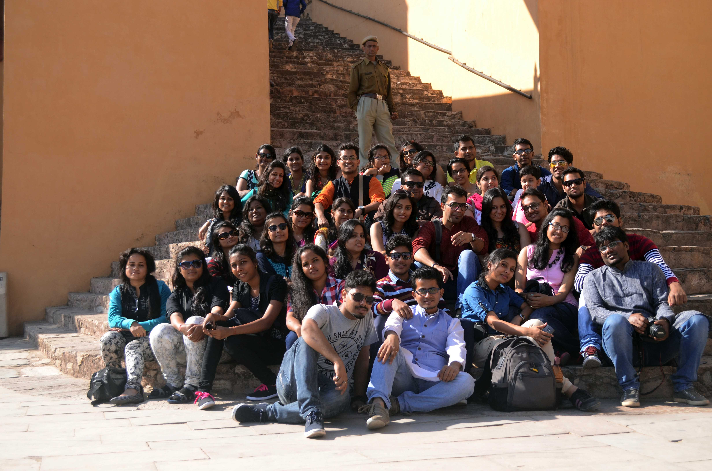

The first overseas initiative of Travel Learning and Documentation Programme “KHMER KINGDOM” had been conducted from 25th May – 5th June, 2015. It was an educational tour with participation of 38 students from Piloo Mody College of Architecture, Cuttack and GITAM University, Vishakhapatnam.
The aim of “KHMER KINGDOM” from TLD is to provide students a unique opportunity to combine a diverse travel and cultural experience, with education focusing on various aspects of a region and heritage. This tour fulfilled in catering a new experience each day for the participants in both the countries (Thailand and Cambodia). A concept of learning beyond studios!
Cambodia’s attraction was Angkor Wat in Siem Reap which is the largest known religious monument in the world. It was initially built as a Vishnu temple in the ancient days but was eventually converted into a Buddhist temple which is now a UNESCO World Heritage Site. The capital city of Phnom Penh offered the grandeur of the Royal Palace with a peak into the day to day life of the living monarch and National Museum which tells us the history of Cambodia. On the contrary Thailand was bright, vibrant, bold architectural examples with a lot of ornamented structures such as Wat Pho, Wat Arun, Royal Palace of Thailand, Vimanmek Mansion (teakwood palace). Ayutthaya was a day trip from Bangkok which had its own charm of an ancient thriving kingdom. Last but not the least Pattaya did surprise with its architectural marvel otherwise known for its beaches only. Nong Nooch Botanical Garden is the habitat of exotic plants and landscape wonder which acted a pit stop for us while we headed towards the airport.
Both the countries have a lot of similarity with each other with significant cultural distinctions which was beautifully captured by the students in the form of illustrations and write ups. The content that has been developed by the students in form of documentation and critical writing is in the process of compilation and soon to be published on our website.
We would like to thank Tourism Authority of Thailand, New Delhi (TAT) for their guidance and support to make this trip a grand success.
Rajasthan, better known as Land of Kings, by all means, is one of the richest states of the country in terms of its history culture and heritage, which has led to a majority of travel enthusiasts and professionals to have hardly left any part of the state unexplored.
Factual journals, emotional memoirs, elaborate history textbooks have already covered the majestic state of Rajasthan extensively enough, for one to feel that there's lack of scope to explore, learn and document furthermore.
With such a dynamic set of expectations from 37 varying creative minds, the programme was designed such to cater to each student's purpose of this architectural expedition
The idea behind the TLD programme of Rajasthan was to not cover a list of 'must-visits', rather to educate and elucidate on the scope of research and documentation, the state had to offer, to the students.
The Itinerary promised educational, informative and a picturesque journey covering a range of historical monuments, archaeological sites, grand palaces, scenic beauties over 7 cities in 11days.
The combination of natural heritage and built heritage made Rajasthan unique in terms of how each terrain had something different to offer. Where Jaipur and Jodhpur were modern cities contemplating and maintaining the identity and subsequently expanding its urban fabric with increasing urbanization, Jaisalmer consistently reflected entirely how the city managed to keep its identity intact even with newer built forms coming up. The lush green hills of Mt. Abu were in rebellion with the barren lands of Thar Desert in Jaisalmer. The Udaipur City Palace boasted of grandeur and architectural magnificence, in contrast to the astonishing history of the Chittorgarh Fort. The contrasting nature of each city, helped the students identify and acquire knowledge of a combination of history, culture, architecture and geography collectively
The state also proudly hosts 2 UNESCO World Heritage Sites, Hill Forts of India being one of them. Over ever changing nature of terrain throughout the course of journey, the students covered 3 forts of the 6 hill forts, namely Amer Fort, Jaisalmer Fort and Chittorgarh Fort, amongst the Programme's other achievements.
The Programme was identified as a success in achieving its original intention of introducing the students to a newer concept of learning beyond studios which subsequently led to be the motivation for a promising architectural thesis and few paper presentations. With effective contribution from the students, an account of the journey, by a means of a travelogue was compiled.